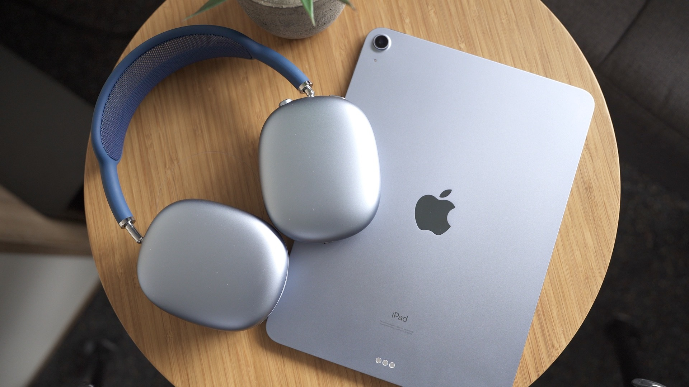
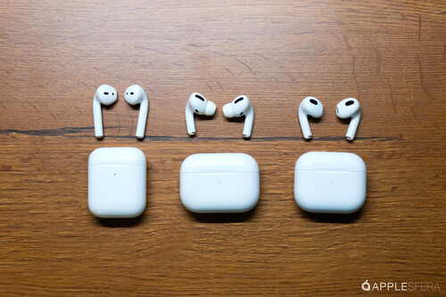
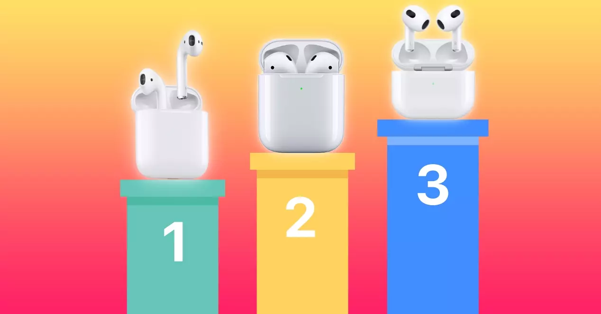

Airpods
Los Airpods Son unos auriculares inalámbricos desarrollados por la compañía Apple, lo que significa que funcionan y se conectan a otros dispositivos compatibles sin cables, a través de conexión Bluetooth.
Airpods Max
Los airpods Max es la version de cascos que cubren toda la oreja, son los airpods mas caros. Son la gama mas altya de airpods diseñados por Apple y lanzados el 15 de diciembre de 2020 con un precio aproximadamente de unos 500 euros
Versiones
Los airpods tienen tres versiones la Primera generacion, la segunda y la tercera.
La primera se identifica como la version mas antigua y tienen un voton para pausar y saltar canciones. La segunda muy siumilar a la primera pero cambia en que el boton pasa a ser tactil y diversas mejoras mas, esteticamente es bastante siumilar. La tercera generacion esteticamente es la mas distinta y tienne diferentes mejoras.
En la imagen se puede ver los trees ejemplos en orden del 1 al 3.
Los Airpods PRO
Los AirPods Pro son los únicos audífonos internos con una Cancelación Activa de Ruido que se adapta continuamente a la geometría de tu oído y al ajuste de las almohadillas. ... Un micrófono orientado hacia adentro detecta cualquier sonido no deseado dentro de los oídos y también lo anula con una onda antifase.

Este tiene un precio mayor al de los airpods normales aproximadamente de 200 a 250 euros.